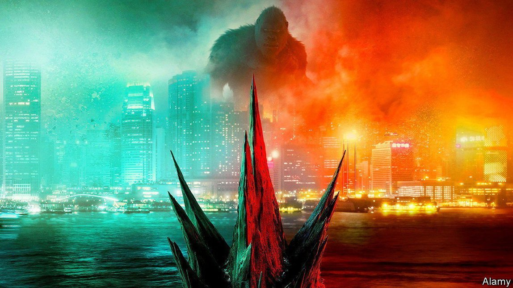
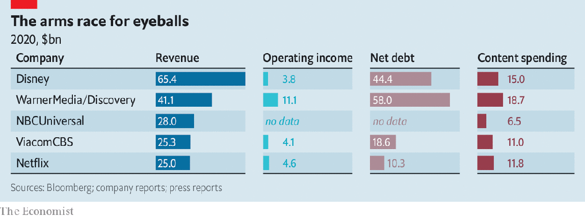
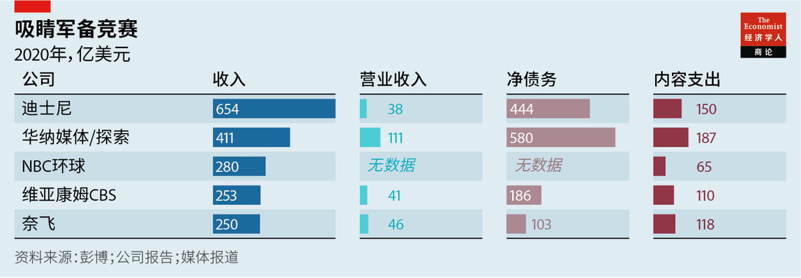

2021-06-01T16:07:07+00:00
Monster merger
巨兽联合
巨獸聯合
The Warner-Discovery deal and the future of streaming
华纳与探索合并以及流媒体的未来
華納與探索合并以及流媒體的未來
To survive online, media firms are combining
为在线上存活下来，媒体公司纷纷联姻
為在線上存活下來，媒體公司紛紛聯姻
ONE OF THE biggest hits of recent years on Discovery’s cable television network is “90 Day Fiancé”, a reality show that follows the fortunes of couples in America on K-1 visas. A condition of the visa is that the pair must marry within three months, or else leave the country. Many of the show’s romances are rocky. But the couples—and riveted viewers—realise that, unless they tie the knot in time, deportation awaits.
在探索公司（Discovery）的有线电视网络上，近年最受欢迎的节目之一是《90天未婚夫》（90 Day Fiancé），这档真人秀追踪在美国持K-1签证的情侣的命运。K-1签证的条件之一是他们必须在三个月内结婚，否则必须离开美国。节目中许多情侣的恋情发展都不怎么顺利。但他们和看得入迷的观众都明白，除非及时完婚，否则等着他们的就是驱逐出境。
在探索公司（Discovery）的有線電視網絡上，近年最受歡迎的節目之一是《90天未婚夫》（90 Day Fiancé），這檔真人秀追蹤在美國持K-1簽證的情侶的命運。K-1簽證的條件之一是他們必須在三個月內結婚，否則必須離開美國。節目中許多情侶的戀情發展都不怎麼順利。但他們和看得入迷的觀眾都明白，除非及時完婚，否則等着他們的就是驅逐出境。
On May 17th Discovery announced that it was to form a marriage of necessity of its own, joining forces with WarnerMedia, which is to be spun off from its owner, AT&T, a telecoms giant. Combined, the two companies will form the world’s second-largest media group by revenue, behind only Disney. Their hope is that this scale will allow them to survive an existential battle for viewers that makes “Godzilla vs. Kong” look like cautious cuddling.
5月17日，探索宣布它自己必须要成婚了。它将与华纳媒体（WarnerMedia）合并，后者会先从母公司、电信巨头AT&T里分拆出来。两家合并后将形成全球收入第二高的媒体集团，仅次于迪士尼。它们希望这样的规模能让自己在攸关生死的观众争夺战中活下来——这场大战的激烈程度让《哥斯拉大战金刚》也显得只是小打小闹。
5月17日，探索宣布它自己必須要成婚了。它將與華納媒體（WarnerMedia）合并，後者會先從母公司、電信巨頭AT&T里分拆出來。兩家合并後將形成全球收入第二高的媒體集團，僅次於迪士尼。它們希望這樣的規模能讓自己在攸關生死的觀眾爭奪戰中活下來——這場大戰的激烈程度讓《哥斯拉大戰金剛》也顯得只是小打小鬧。
The announcement is a Hollywood plot twist for show business. It has already caused speculation about further mergers, as panicked media companies seek their own partners before it is too late. Some may already have missed their moment.
对影视行业而言，这个消息就像好莱坞影片中的剧情转折点。它已引发了将出现更多并购的猜测，因为惊慌失措的媒体公司争相寻求自己的合作伙伴，生怕为时已晚。一些公司可能已经错失良机。
對影視行業而言，這個消息就像好萊塢影片中的劇情轉折點。它已引發了將出現更多併購的猜測，因為驚慌失措的媒體公司爭相尋求自己的合作夥伴，生怕為時已晚。一些公司可能已經錯失良機。
At first sight Warner and Discovery make an odd couple. The first specialises in high-quality TV series and films, such as “Game of Thrones” or the Godzilla-Kong saga, whereas the second serves up cheap factual fare. Yet their different programming, and the sheer quantity of it, ought to help them appeal to a wider audience. The $19bn that the two spent on content last year was more than either Disney or Netflix (see chart). The new firm will also have the biggest share of American cable viewers. Its channels accounted for 29% of viewing time last year, according to MoffettNathanson, a research firm, which expects it to use its heft to negotiate better affiliate fees and ad rates. The merged firm expects to save $3bn a year in costs.
乍看之下，华纳和探索的联姻有点奇怪。前者擅长制作《权力的游戏》或《哥斯拉大战金刚》这类高质量的电视剧和电影，后者则是制作低成本的纪实节目。然而，它们风格不同而数量庞大的节目应该有助于吸引到更多观众。去年，这两家公司在内容上的支出合计190亿美元，高过迪士尼或奈飞（见图表）。合并后的新公司将拥有最多的美国有线电视观众。据研究公司莫菲特内桑森（MoffettNathanson）估计，它们旗下的电视频道占据了去年29%的收视时间，它还预计新公司将利用它的规模谈判更高的联署营销费和广告费。合并后的新公司预计每年可节省30亿美元的成本。
乍看之下，華納和探索的聯姻有點奇怪。前者擅長製作《權力的遊戲》或《哥斯拉大戰金剛》這類高質量的電視劇和電影，後者則是製作低成本的紀實節目。然而，它們風格不同而數量龐大的節目應該有助於吸引到更多觀眾。去年，這兩家公司在內容上的支出合計190億美元，高過迪士尼或奈飛（見圖表）。合并後的新公司將擁有最多的美國有線電視觀眾。據研究公司莫菲特內桑森（MoffettNathanson）估計，它們旗下的電視頻道佔據了去年29%的收視時間，它還預計新公司將利用它的規模談判更高的聯署營銷費和廣告費。合并後的新公司預計每年可節省30億美元的成本。
For AT&T, the deal represents an admission that its expensive foray into entertainment has flopped. It bought Time Warner in 2016 at an enterprise value of $110bn, later changing its name to WarnerMedia. The previous year it had purchased DirecTV, a satellite-television firm, at an enterprise value of $67bn. The idea was to vertically integrate the businesses of content creation and distribution. But the liaison proved an unhappy one. And while regulators delayed the Time Warner acquisition by two years, Disney and other rivals gained ground.
这次合并意味着AT&T承认自己花费高昂的娱乐业探险已告失败。AT&T在2016年以1100亿美元的企业价值收购了时代华纳，后来将其更名为华纳媒体。此前一年，它以670亿美元的企业价值收购了卫星电视公司DirecTV。这么做是为了垂直整合内容创作和发行。但事实证明这段联姻并不美满。而且对时代华纳的收购因等待监管机构批准而延迟了两年，在此期间迪士尼和其他竞争对手趁机抢占了市场。
這次合并意味着AT&T承認自己花費高昂的娛樂業探險已告失敗。AT&T在2016年以1100億美元的企業價值收購了時代華納，後來將其更名為華納媒體。此前一年，它以670億美元的企業價值收購了衛星電視公司DirecTV。這麼做是為了垂直整合內容創作和發行。但事實證明這段聯姻並不美滿。而且對時代華納的收購因等待監管機構批准而延遲了兩年，在此期間迪士尼和其他競爭對手趁機搶佔了市場。
In February AT&T began to unwind its position, spinning out DirecTV in a deal that valued the division at just $16bn. By hiving off WarnerMedia it will receive the equivalent of $43bn upfront, in a mix of cash, securities and transferred debt. As well as this, AT&T shareholders will own 71% of the new company, with Discovery’s shareholders getting the rest. The deal values WarnerMedia at about $100bn, meaning that under AT&T its value has stagnated even as other media giants grew fast.
2月，AT&T开始“割肉”，以仅160亿美元的估值剥离了DirecTV。通过剥离华纳媒体，AT&T将获得包括现金、证券和转让债务在内总值430亿美元的付款。除此以外，AT&T的股东将拥有新公司71%的股份，探索的股东将获得其余股份。在这次交易中，华纳媒体的估值约为1000亿美元，也就是说在其他媒体巨头快速增长之时，在AT&T旗下的华纳媒体的价值却停滞不前。
2月，AT&T開始“割肉”，以僅160億美元的估值剝離了DirecTV。通過剝離華納媒體，AT&T將獲得包括現金、證券和轉讓債務在內總值430億美元的付款。除此以外，AT&T的股東將擁有新公司71%的股份，探索的股東將獲得其餘股份。在這次交易中，華納媒體的估值約為1000億美元，也就是說在其他媒體巨頭快速增長之時，在AT&T旗下的華納媒體的價值卻停滯不前。
The new company is to be run by Discovery’s boss, David Zaslav, leaving no place for Jason Kilar, who was hired a year ago to run WarnerMedia. Mr Kilar, whose background is in technology, had gone all out to push HBO Max, Warner’s streaming service. In December he said that all of this year’s releases from the Warner Bros studio would be available for streaming at the same time that they entered cinemas. Hollywood traditionalists were scandalised; many now feel some satisfaction. “AT&T backstabs its own hatchet man” ran a headline in Variety, an industry magazine.
新公司将由探索的老板大卫·扎斯拉夫（David Zaslav）掌管，而没有交给一年前受聘职掌华纳媒体的杰森·基拉尔（Jason Kilar）。技术出身的基拉尔此前不遗余力地推动华纳的流媒体服务HBO Max。他在去年12月表示，华纳兄弟影业2021年发行的所有影片将在电影院和自家流媒体上同步上映。这让好莱坞的传统派深感震惊，现在他们中的许多人多少感到满意了。行业杂志《综艺》（Variety）打出大标题“AT&T摆了它的前台打手一道”。
新公司將由探索的老闆大衛·扎斯拉夫（David Zaslav）掌管，而沒有交給一年前受聘職掌華納媒體的傑森·基拉爾（Jason Kilar）。技術出身的基拉爾此前不遺餘力地推動華納的流媒體服務HBO Max。他在去年12月表示，華納兄弟影業2021年發行的所有影片將在電影院和自家流媒體上同步上映。這讓好萊塢的傳統派深感震驚，現在他們中的許多人多少感到滿意了。行業雜誌《綜藝》（Variety）打出大標題“AT&T擺了它的前台打手一道”。
The shotgun wedding may be awkward, but it is necessary. Competition in streaming, already brutal, is about to become more so. The lockdowns of 2020 provided a captive audience. Total media-consumption time increased by 12% between the second and fourth quarters of last year, according to a nine-country survey by MIDiA Research, a firm of analysts. The average American household subscribed to four streaming services. As the world opens up people will spend less time in front of the box. Consumer spending on video media shrank by 2% year on year in the first quarter, according to GroupM, a giant in the business of placing adverts on behalf of clients. In recent weeks Netflix and Disney, the leading streamers, have both missed forecasts for subscriber growth.
仓促成婚或许叫人尴尬，但也着实必要。在流媒体这一块的竞争目前已经很残酷，而且还会加剧。2020年的封城措施催生了一批坐困家中的忠实观众。分析公司MIDiA Research一项对九个国家的调查显示，去年第二季度到第四季度之间媒体消费总时长上升了12%。美国家庭平均订阅四个流媒体服务。随着全球逐步解封，人们坐在屏幕前的时间将减少。广告业巨头群邑（GroupM）的数据显示，消费者的视频媒体支出在第一季度同比缩减了2%。最近几周，流媒体巨头奈飞和迪士尼的订户增长均未达到预期。
倉促成婚或許叫人尷尬，但也着實必要。在流媒體這一塊的競爭目前已經很殘酷，而且還會加劇。2020年的封城措施催生了一批坐困家中的忠實觀眾。分析公司MIDiA Research一項對九個國家的調查顯示，去年第二季度到第四季度之間媒體消費總時長上升了12%。美國家庭平均訂閱四個流媒體服務。隨着全球逐步解封，人們坐在屏幕前的時間將減少。廣告業巨頭群邑（GroupM）的數據顯示，消費者的視頻媒體支出在第一季度同比縮減了2%。最近幾周，流媒體巨頭奈飛和迪士尼的訂戶增長均未達到預期。
To compete in this environment, says Michael Nathanson of MoffettNathanson, a streaming service needs four things: scale at home, high-quality content, a flexible balance-sheet to pay for it and, to help spread the costs, the ability to expand globally. With a compelling catalogue and a solid presence in America, HBO Max ticks the first two boxes. But AT&T’s sickly balance-sheet has made it hard to keep up with the likes of Netflix in spending on shows. And having chosen to license content to distributors in other countries, such as Sky in Britain, rather than set up shop abroad, its international footprint is puny.
莫菲特内桑森的迈克尔·内桑森（Michael Nathanson）指出，要在这种环境里竞争，一款流媒体服务需要四样东西：本土规模、高质量内容、能为内容买单的灵活的资产负债表，以及能帮助摊薄成本的全球扩展能力。凭借精彩丰富的节目库和在美国市场的稳固占有率，HBO Max满足了前两样。但AT&T羸弱的资产负债表让它在节目投入方面难以跟上奈飞等公司。由于它选择把节目授权给其他国家的发行商，如英国的天空电视台，而不是在海外设立分公司，其国际业务相当薄弱。
莫菲特內桑森的邁克爾·內桑森（Michael Nathanson）指出，要在這種環境里競爭，一款流媒體服務需要四樣東西：本土規模、高質量內容、能為內容買單的靈活的資產負債表，以及能幫助攤薄成本的全球擴展能力。憑藉精彩豐富的節目庫和在美國市場的穩固佔有率，HBO Max滿足了前兩樣。但AT&T羸弱的資產負債表讓它在節目投入方面難以跟上奈飛等公司。由於它選擇把節目授權給其他國家的發行商，如英國的天空電視台，而不是在海外設立分公司，其國際業務相當薄弱。
The Discovery deal helps to tackle both of these problems. Warner will no longer be beholden to AT&T’s balance-sheet, although the new firm will start life with hefty debts of its own. And Discovery+ is already up and running in Europe and India. This earns the combined company a place in the top tier of streamers, alongside Netflix, Disney and Amazon, says Mr Nathanson. Amazon is looking to shore up its position, and is reportedly in talks to buy Metro-Goldwyn-Mayer (MGM), the studio behind the James Bond films, for $9bn. Last year it spent $11bn on video and music content, 40% more than in 2019. With 175m viewers it is not far behind Netflix’s tally of 208m—though many rarely watch, subscribing instead for shopping discounts and other benefits.
与探索合并有助于解决这两个问题。华纳将不再受制于AT&T的资产负债表，尽管新公司一成立就会背上巨债。而探索的流媒体服务Discovery+已经在欧洲和印度运作，这使合并后的公司得以跻身顶级流媒体公司，与奈飞、迪士尼和亚马逊处在同一梯队，内桑森表示。亚马逊希望巩固自己在其中的位子，据说正在谈判以90亿美元的价格收购曾打造詹姆斯·邦德系列电影的电影公司米高梅。去年亚马逊在视频和音乐内容上花费了110亿美元，比2019年多40%。亚马逊拥有1.75亿订阅观众，与奈飞的2.08亿相差不远，不过其中很多人并不怎么收看节目，订阅是为了购物折扣和其他好处。
與探索合并有助於解決這兩個問題。華納將不再受制於AT&T的資產負債表，儘管新公司一成立就會背上巨債。而探索的流媒體服務Discovery+已經在歐洲和印度運作，這使合并後的公司得以躋身頂級流媒體公司，與奈飛、迪士尼和亞馬遜處在同一梯隊，內桑森表示。亞馬遜希望鞏固自己在其中的位子，據說正在談判以90億美元的價格收購曾打造詹姆斯·邦德系列電影的電影公司米高梅。去年亞馬遜在視頻和音樂內容上花費了110億美元，比2019年多40%。亞馬遜擁有1.75億訂閱觀眾，與奈飛的2.08億相差不遠，不過其中很多人並不怎麼收看節目，訂閱是為了購物折扣和其他好處。
Where does that leave the rest? Some are scrambling to form mergers of their own. On the same day that the Warner-Discovery deal was announced, two big French broadcasters, TF1 and M6, said they would join forces, arguing that together they could provide an “ambitious French response” to competition from international streamers. The deal must first satisfy regulators; the two firms control three-quarters of the French TV-advertising market. Brian Wieser of GroupM expects more consolidation in Europe. He highlights BritBox, owned by Britain’s BBC and ITV, and TVNow, owned by RTL, a European group, as services that will require considerably bigger investments if they are to be truly competitive.
那么剩下的媒体公司要怎么办？有些正急着找人联手。在华纳媒体和探索宣布合并的同一天，TF1和M6这两家大型法国广播公司表示将联合起来，这样就能以“宏大的法国对策”抗衡来自国际流媒体的竞争。这一合并首先必须满足监管机构的要求，毕竟这两家公司控制着法国电视广告市场四分之三的份额。群邑的布莱恩·威泽（Brian Wieser）预计欧洲会出现更多整合。他特别提到由英国广播公司和独立电视台（ITV）联合推出的BritBox，以及欧洲企业集团RTL旗下的TVNow，因为这些平台将需要大大加大投资才可能真正具备竞争力。
那麼剩下的媒體公司要怎麼辦？有些正急着找人聯手。在華納媒體和探索宣布合并的同一天，TF1和M6這兩家大型法國廣播公司表示將聯合起來，這樣就能以“宏大的法國對策”抗衡來自國際流媒體的競爭。這一合并首先必須滿足監管機構的要求，畢竟這兩家公司控制着法國電視廣告市場四分之三的份額。群邑的布萊恩·威澤（Brian Wieser）預計歐洲會出現更多整合。他特別提到由英國廣播公司和獨立電視台（ITV）聯合推出的BritBox，以及歐洲企業集團RTL旗下的TVNow，因為這些平台將需要大大加大投資才可能真正具備競爭力。
Of the larger American firms, Apple TV+ has yet to take off, despite giving away subscriptions left, right and centre (more than 60% of its 40m or so users are reckoned to be on free trials). It has not registered any big hits so far, but it has oodles of cash with which to buy some if it chooses; Apple executives reportedly looked at MGM before Amazon swooped in.
而在规模更大的美国公司中，苹果的流媒体服务Apple TV+尽管在到处赠送订阅（据信约4000万用户中超过60%是在免费试用），但其业务尚未起飞。它至今没推出过什么大热之作，但它有大量资金，如果愿意的话可以买一些来——据称在亚马逊突然出手之前，苹果高管曾考虑收购米高梅。
而在規模更大的美國公司中，蘋果的流媒體服務Apple TV+儘管在到處贈送訂閱（據信約4000萬用戶中超過60%是在免費試用），但其業務尚未起飛。它至今沒推出過什麼大熱之作，但它有大量資金，如果願意的話可以買一些來——據稱在亞馬遜突然出手之前，蘋果高管曾考慮收購米高梅。
Strutting their stuff
大展身手
大展身手
NBCUniversal, which is owned by Comcast, a cable giant, and last year launched its Peacock streaming service, and ViacomCBS, which recently unveiled its own equivalent, Paramount+, are in a sticky position. Their competing television interests would make it difficult for them to merge. They could buy other media properties that have not already been snapped up, such as AMC Networks, which owns several entertainment channels, or Lionsgate, the studio behind films like “The Hunger Games” and TV shows like “Mad Men”. But none of these assets alone would help a company to leap to global scale. Those that have not already arranged their nuptials may face the corporate equivalent of unceremonious deportation. ■
有线电视巨头康卡斯特（Comcast）旗下的NBC环球（NBCUniversal）去年推出了流媒体服务Peacock，维亚康姆CBS（ViacomCBS）最近也推出了自家的同类服务Paramount+。但两者处境尴尬。这两家公司在电视业务上是竞争对手，因而难以合并。它们可以收购其他尚未被哄抢的媒体资产，比如拥有多个娱乐频道的AMC Networks，或制作过《饥饿游戏》（The Hunger Games）等电影和《广告狂人》（Mad Men）等剧集的狮门影业（Lionsgate）。但仅凭这些资产并不能让一家公司一举具备全球规模。那些尚未安排联姻的公司可能将面临粗鲁的驱逐。
有線電視巨頭康卡斯特（Comcast）旗下的NBC環球（NBCUniversal）去年推出了流媒體服務Peacock，維亞康姆CBS（ViacomCBS）最近也推出了自家的同類服務Paramount+。但兩者處境尷尬。這兩家公司在電視業務上是競爭對手，因而難以合并。它們可以收購其他尚未被哄搶的媒體資產，比如擁有多個娛樂頻道的AMC Networks，或製作過《飢餓遊戲》（The Hunger Games）等電影和《廣告狂人》（Mad Men）等劇集的獅門影業（Lionsgate）。但僅憑這些資產並不能讓一家公司一舉具備全球規模。那些尚未安排聯姻的公司可能將面臨粗魯的驅逐。